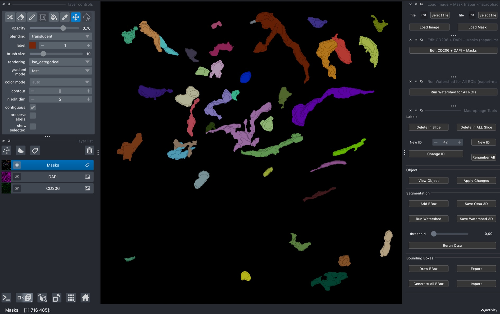
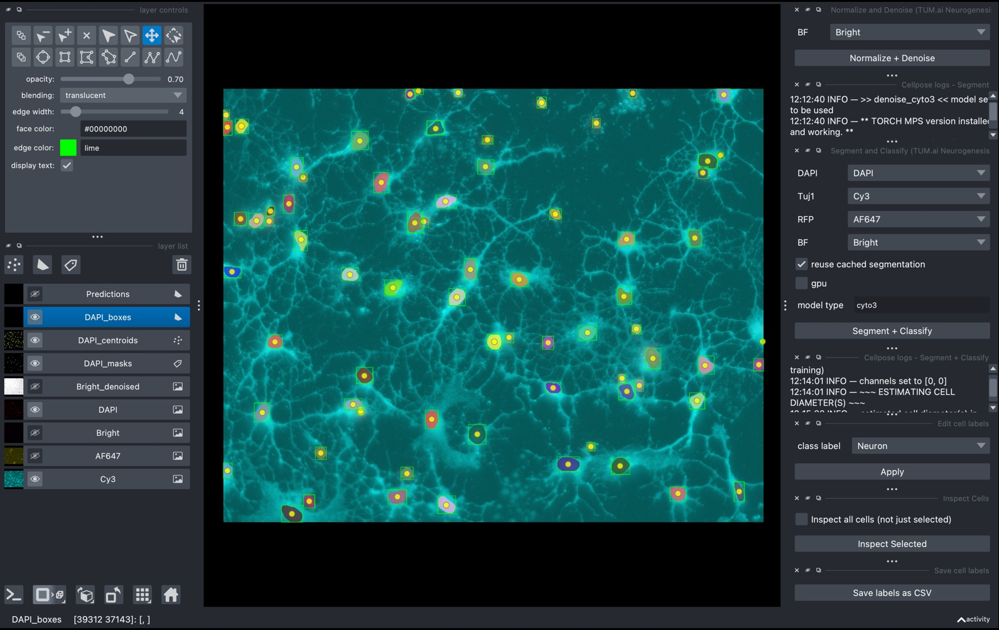
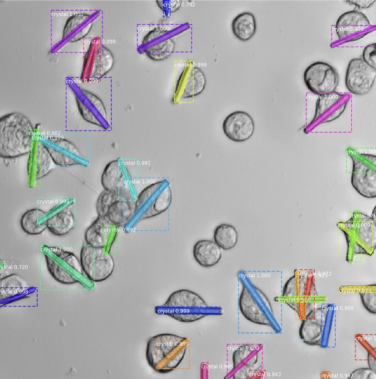
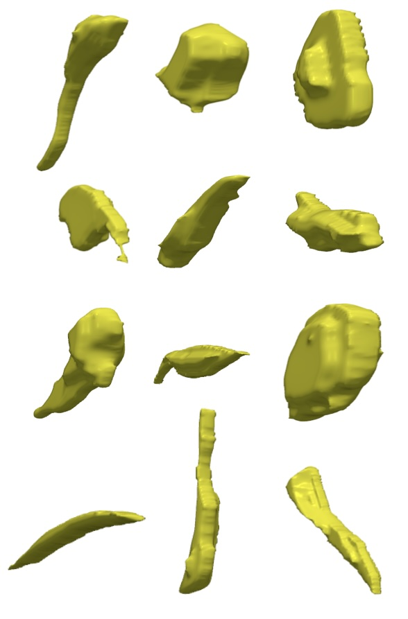
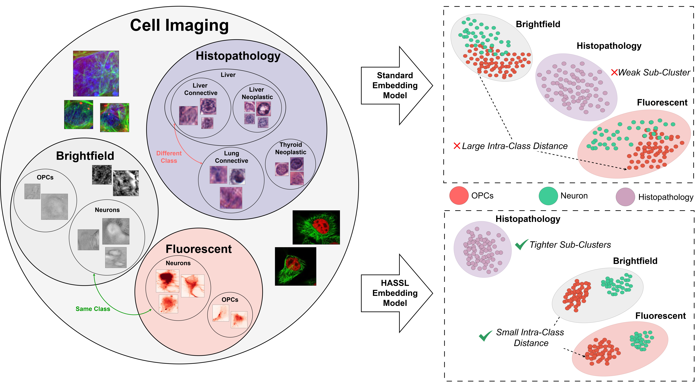
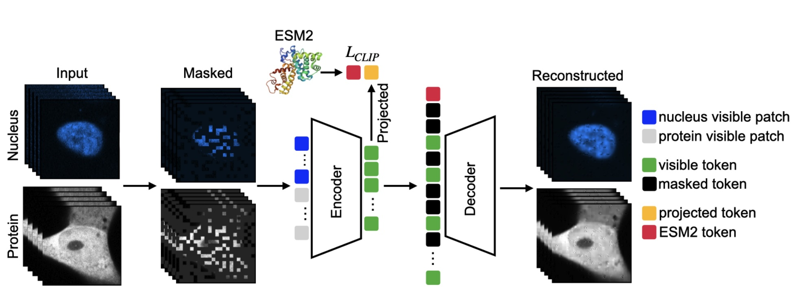
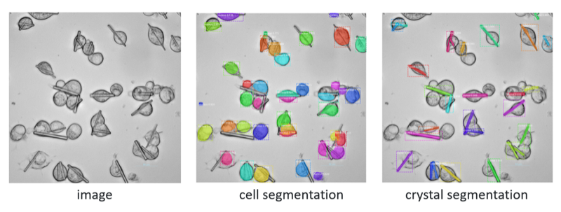
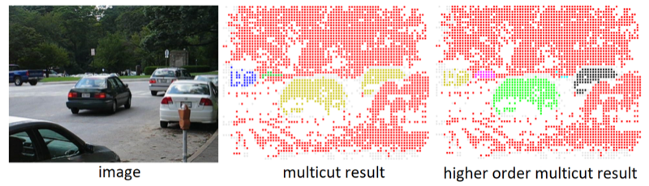
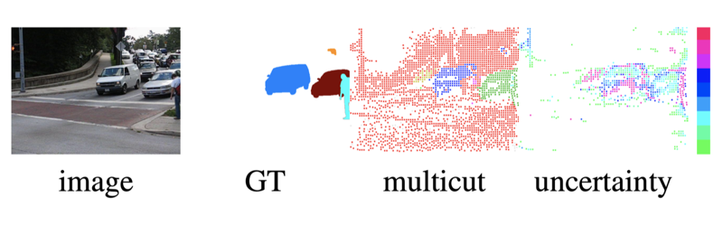
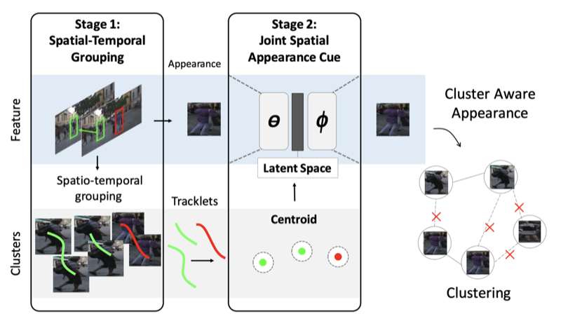

I am a machine learning and computer vision engineer based in Munich, currently at Helmholtz Munich (Institute of AI for Health). I build AI systems for complex visual data at scale, from natural images and videos to 2D and 3D microscopy, and I ship them as tools.
I focus on machine learning and computer vision problems like segmentation, tracking, multimodal learning, and self-supervised learning. Alongside the models, I build the machine learning infrastructure that turns these methods into reliable systems on real imaging data. I work end-to-end, from data annotation, model training and distributed GPU workflows to deployable tools, interactive GUIs, and data management platforms.
Previously, I was a software engineer at European XFEL, where I built computer vision pipelines, databases, microscopy data management systems, hardware control interfaces, and web tools for experimental workflows at scale.
I received my Ph.D. in Computer Science, magna cum laude, from the University of Siegen, where I worked on video instance and motion segmentation under the supervision of Prof. Margret Keuper. Prior to that, I completed my Master's in Computer Science from Saarland University.










A Two-Stage Minimum Cost Multicut Approach to Self-Supervised Multiple Person Tracking
ACCV, 2020